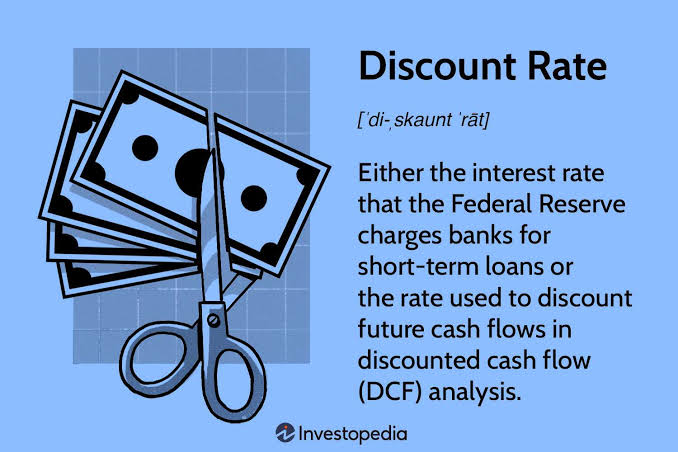

Discount Rate & Cost of Capital (WACC)
Master how to determine the discount rate in Discounted Cash Flow (DCF) valuation by calculating the Weighted Average Cost of Capital (WACC), Cost of Equity (CAPM), and the after-tax Cost of Debt.

In Discounted Cash Flow (DCF) valuation, future cash flows cannot be valued at face value because money received in the future is worth less than money today due to risk, inflation, and opportunity cost.
The Discount Rate translates future Free Cash Flows to Firm (FCFF) into their Present Value (PV). When discounting FCFF—which belongs to both debt and equity holders—the appropriate discount rate is the Weighted Average Cost of Capital (WACC).
What is the Weighted Average Cost of Capital (WACC)?
WACC represents the blended target return required by all capital providers (equity investors and debt lenders) to finance a firm's assets and business operations.
Where:
• E = Market value of Equity
• D = Market value of Debt
• V = Total Market Value of Capital (E + D)
• R_e = Cost of Equity
• R_d = Cost of Debt (pre-tax yield)
• T_c = Corporate tax rate (interest tax shield effect)
Breaking Down the WACC Components
1. Cost of Equity (R_e) via CAPM: Equity investors require a higher return than debt holders because equity bears higher risk. The Cost of Equity is standardly calculated using the Capital Asset Pricing Model (CAPM):
• R_f (Risk-Free Rate): Yield on long-term government bonds (e.g., 10-Year Treasury).
• β (Beta): Sensitivity of the company's stock relative to the broader stock market.
• ERP (Equity Risk Premium, E(R_m) - R_f): The additional return required over risk-free assets for investing in equity markets.
2. Cost of Debt (R_d) & Interest Tax Shield: The cost of debt is the effective rate a company pays on its borrowed debt. Because interest payments are tax-deductible expense items, debt generates an interest tax shield:
Real-World Corporate Finance Example
Suppose Company Z has a market value of $70 million in Equity and $30 million in Debt (Total Capital V = $100M). The corporate tax rate is 25%.
Market Parameters: Risk-free rate (R_f) = 4.0%, Beta (β) = 1.20, Equity Risk Premium (ERP) = 5.0%, Pre-tax Cost of Debt (R_d) = 6.0%.
Step 1: Calculate Cost of Equity (R_e):
R_e = 4.0% + 1.20 × 5.0% = 4.0% + 6.0% = 10.0%.
Step 2: Calculate After-Tax Cost of Debt:
After-Tax R_d = 6.0% × (1 - 0.25) = 4.5%.
Step 3: Calculate WACC weights & final rate:
Weight of Equity (E/V) = $70M / $100M = 70%
Weight of Debt (D/V) = $30M / $100M = 30%
WACC = (0.70 × 10.0%) + (0.30 × 4.5%) = 7.0% + 1.35% = 8.35%.
Why WACC is Critical in Valuation
Sensitivity to Capital Structure: A lower WACC increases the present value of future cash flows, driving up company valuation. Managers seek to optimize debt and equity ratios to minimize WACC.
Hurdle Rate for Capital Allocation: In corporate decision-making, projects must earn a return greater than WACC to create value for shareholders.
📝 Practice Quiz & Submodule Check
Complete all questions to unlock Submodule 3.3Answer the multiple-choice questions below. Scoring a perfect score will automatically mark this submodule as completed!